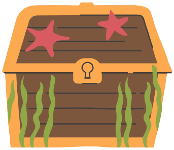
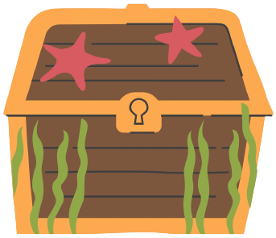

Description
Kelp is known for being able to absorb and store heavy metals and other pollutants from the environment. This property could possibly be used in developing new bioremediation technologies for cleaning up contaminated water and soil.
Heavy metals such as lead and mercury, as well as radioactive isotopes such as iodine-131 and cesium-137, can be absorbed by kelp from the surrounding water. Heavy metals could otherwise lower energy levels and damage organs (Jaishankar et al., 2014) and radioactive isotopes could increase the risk of cancers or cause radiation sickness (CDC, 2018).
Bioremediation is the process of removing toxins from the environment using living organisms. Through phytoremediation, marine macroalgae like kelp and seaweed were shown to be successful in removing different pollutants from aquatic environments. Heavy metals, chemical compounds, and other toxins in water are absorbed and accumulated by these algae, eliminating them from the environment. The algae may then be utilized for various applications, including biofuels, fertilizers, and animal feed.
Furthermore, the production of these algae can potentially give economic advantages to coastal communities. The bioremediation potential of marine macroalgae is an important field of study, with continuous attempts to refine the process and discover novel uses.
Through research, kelp was found to be useful in the remediation of polluted water in regions such as industrial zones and mining sites.
According to research published in the journal Marine Pollution Bulletin, a dangerous amount of toxic metals such as mercury and lead can be seen absorbed in seaweed in Europe and Asia, showing the feasibility of using seaweed for bioremediation (Paz et al., 2019). This research on the bioremediation potential of marine macroalgae takes a multidisciplinary approach, combining chemical and biology concepts.
To completely comprehend how macroalgae absorb and eliminate pollutants from the environment, it is vital to examine their chemical mechanisms and how they interact with various contaminants.


 
